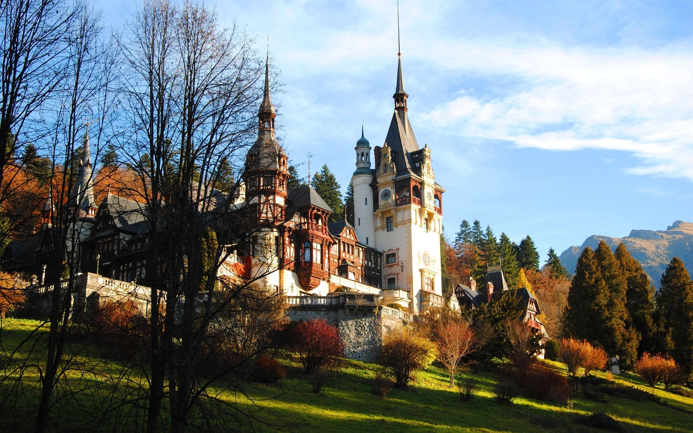
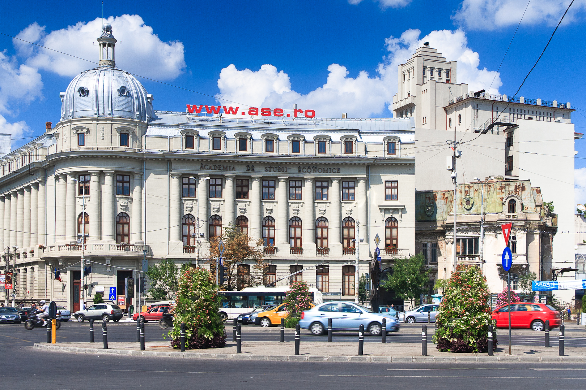

Образование в Румынии
Добро пожаловать в Румынию!
Румыния — это страна, которая находится с южно-восточной части Европы со столицей Бухарест. Страны ближайшего зарубежья несколько незаслуженно обходятся стороной при рассмотрении обучения в иностранном учебном заведении. Украинцы часто отдают свое предпочтение получению высшего образования в Румынии. Основная причина популярности – это возможность получения стипендий.
В Бухаресте расположено 30 процентов всех университетов. Остальные университеты расположены в таких городах как: Констанца, Тимишаор, Клуй, Брашов, Яссы.
Что касается процесса поступления, то он довольно прост, так как отсутствую вступительные экзамены. И после того как вами выбран университет и специальность на которую вы планируете поступать вам необходимо подать заполненное заявление на поступление, и предоставить копии документов:
- - паспорта;
- - аттестата о среднем образовании, с приложением полученных оценок;
- - академической справка (если вы уже учились в высшем учебном заведении в Украине);
- - медицинской справки (переведенная и заверенная).
Важно не затягивать с подачей оригиналов документов, так как заявление рассматривается длительный период, около 2 месяцев. Румынская система образования позволяет подать документы в разные университеты, чтобы точно куда-нибудь поступить. Для этого нужно как можно раньше приехать в Румынию. При поступлении первый год вы обучаетесь языку на курсах, по окончанию которых вы выполните тест, который показывает уровень знания румынского языка. Как только вы будете зачислены в университет, вы получаете личный номер. Так же для обучения на территории Румынии вам потребуется долгосрочная виза, необходимо взять в университете справку с указанием названия университета и персонального номера.
Приемущества высшего образования в Румынии:
Краткая информация
| Город | Бухарест |
| Университет | Бухарестская Экономическая Академия (Bucharest University of Economic Studies) |
| Описание университета | Cтарейший вуз в области экономики и бизнес-исследований в Румынии, основан в 1913 году. В настоящее время - одно из крупнейших и популярных высших учебных заведений Румынии и Юго-Восточной Европы. |
| Сайт университета | Click |
| Специальности программы Бакалавр | 1. Экономическая информатика |
| 2. Экономическая кибернетика | |
| 3.Статистика и экономическое прогнозирование | |
| Специальности программы Магистр | 1. Экономическая информатика |
| 2. Кибернетика и Количественная экономика | |
| 3. Компьютеризированное управление проектами | |
| 4. Базы данных - поддержка бизнеса | |
| 5. Е-бизнес | |
| 6. IT Безопасность | |
| 7. Бизнес-анализ и управление эффективностью предприятия | |
| Сайт факультета | Click |
| Язык | Английский, Румынский |
| Режим обучения | Стационар |
| Описание курсов | Описание специальностей прораммы Бакалавр Вы сможете найти на сайте университета, на факультете экономической кибернетики, статистики и информатики, а специальности программы Магистр на сайте факультета в разделе "Преподавание и обучение". |
| Стоимость обучения | По программе бакалавра обучение будет стоить от 3 до 4 тысяч долларов, а если рассматривать программу магистра, то стоимость повышается до 4-8 тысяч долларов |
| Проживание | Аренда жилья будет стоить около 150-200 долларов в месяц. |
Фотографии
|  |